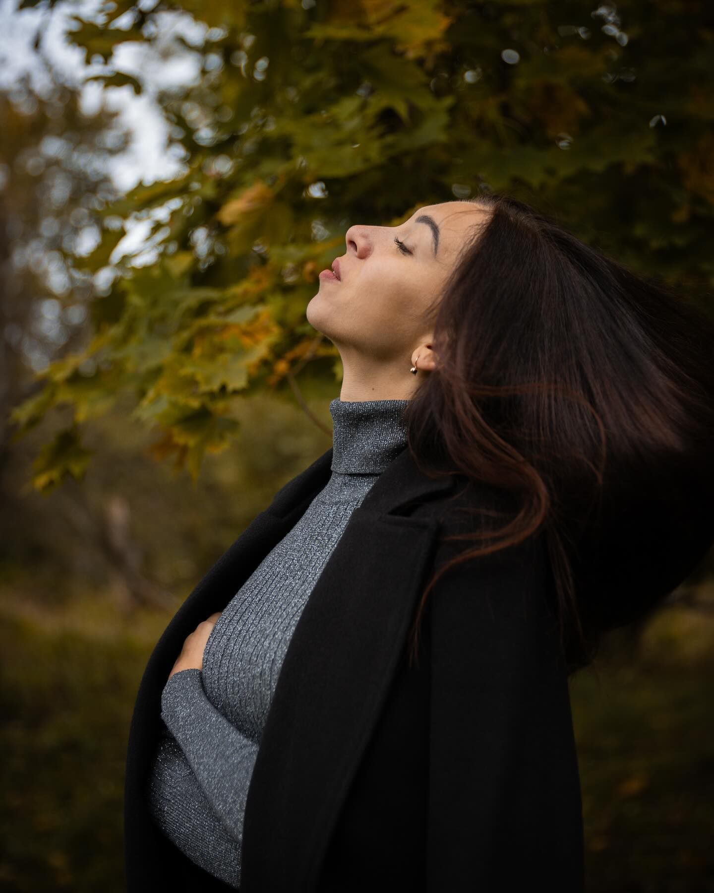
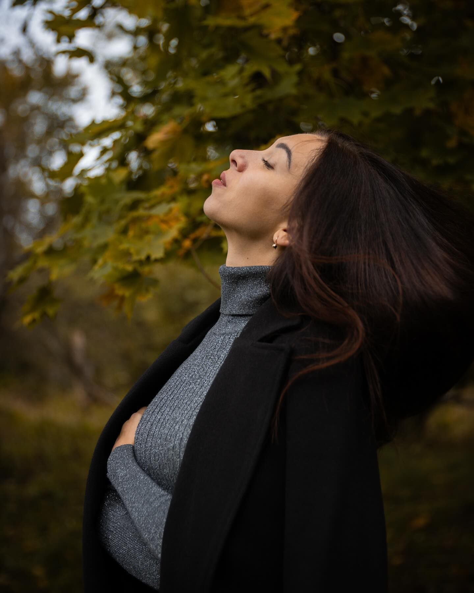
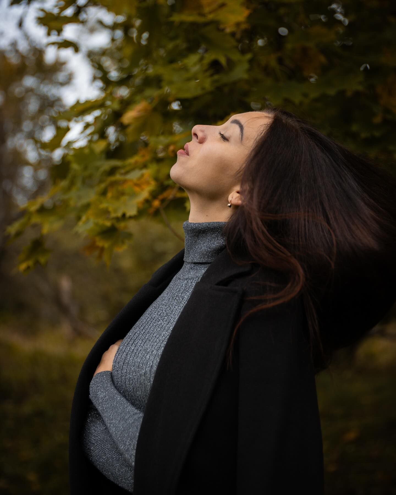
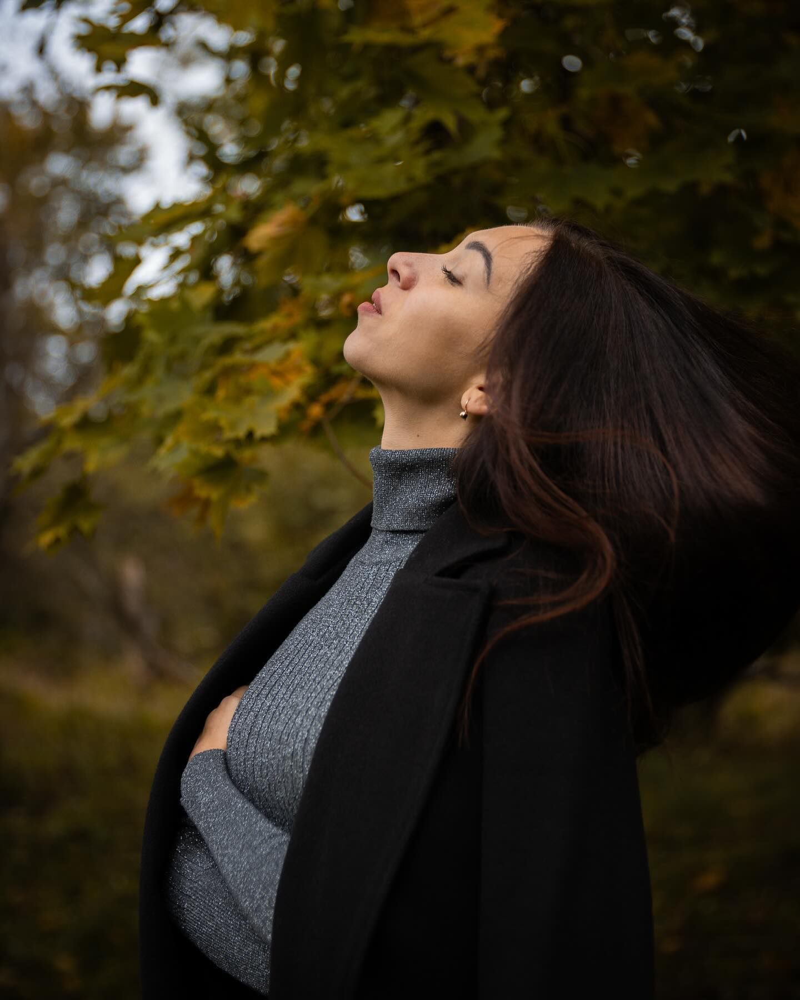
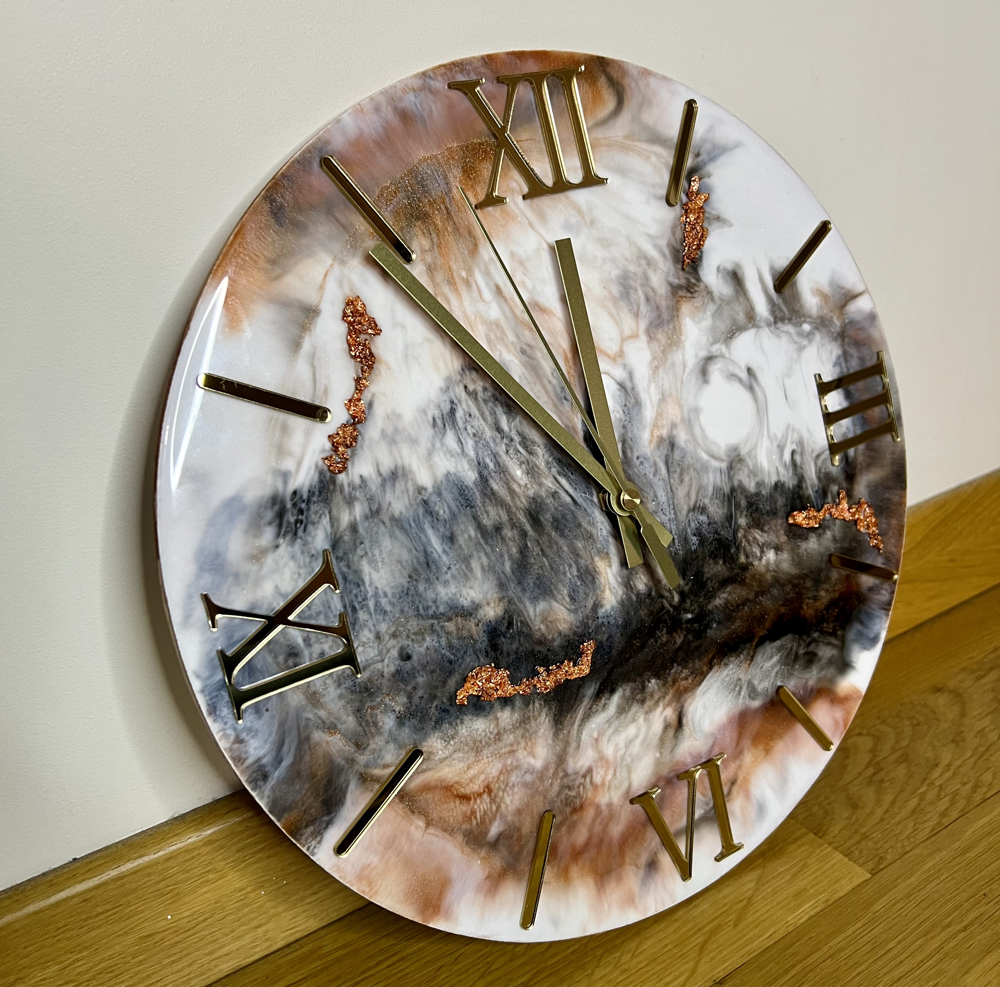
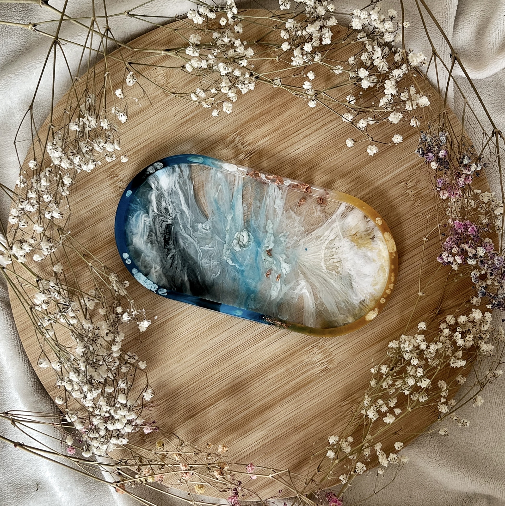
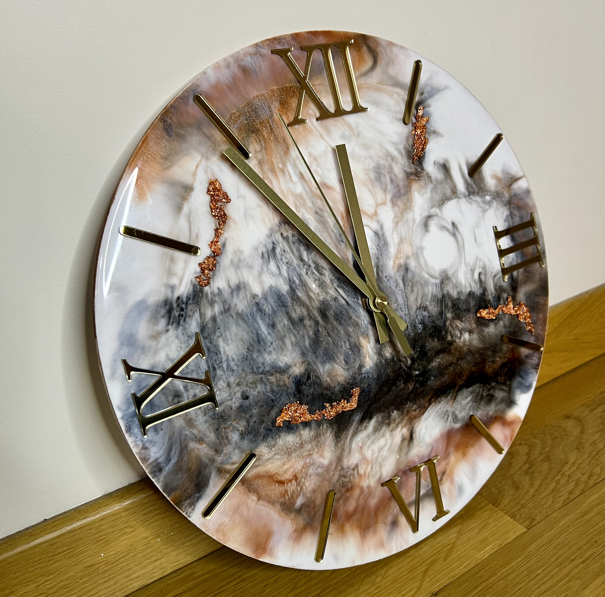
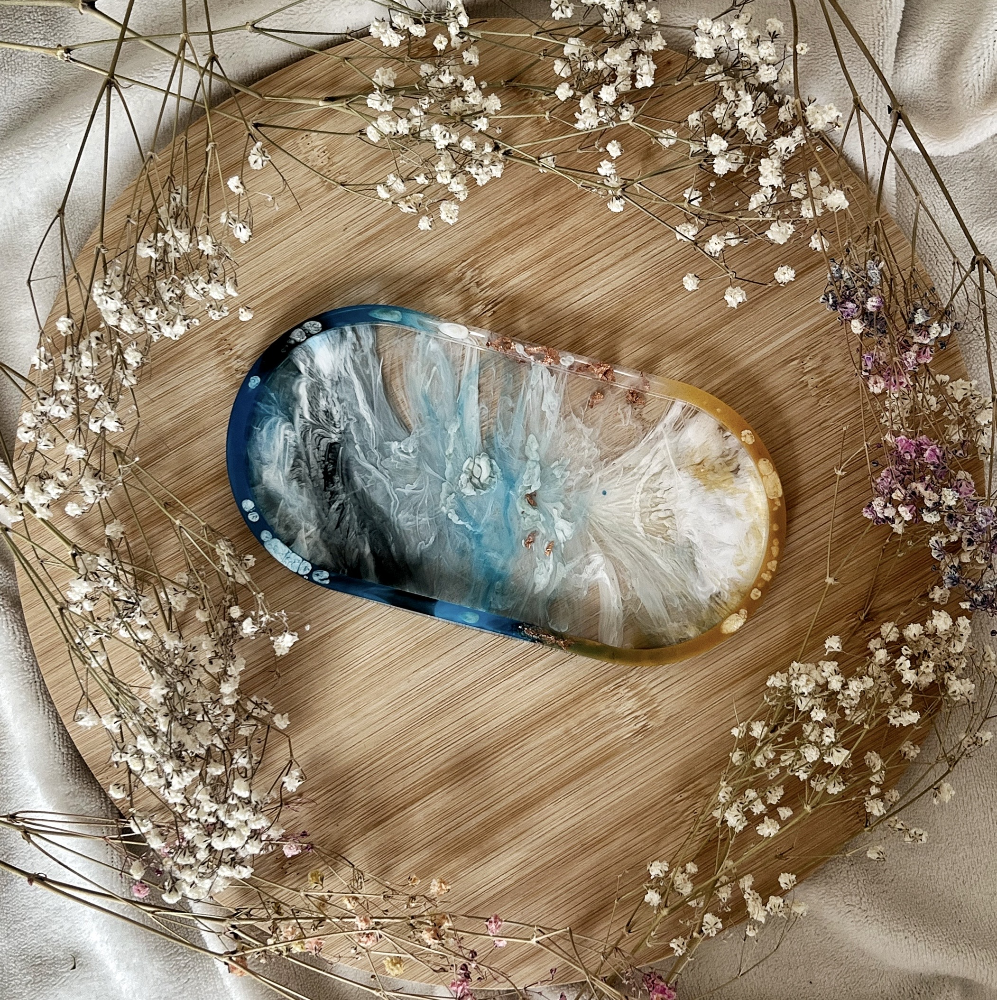
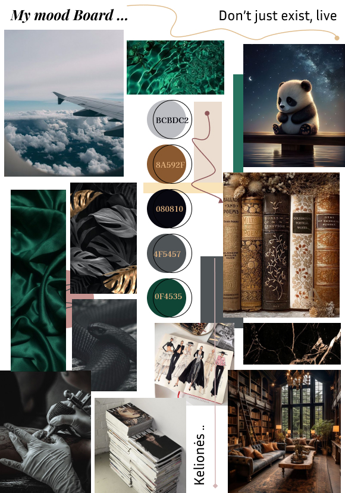

 

 



Esu kaip šiais laikais sakoma priskiriama prie jaunimo, nes pasirodo "jaunimu" šią dieną vadina visus, esančius jaunesnius nei 29-ių metų amžiaus žmones. Na o man yra visi 26-eri. Esu energijos ir džiaugsmo užtaisas. Po vienuolikos metų santykių (kuriuose būta visko), su dabar jau būsimu vyru - susižadėjome taip atversdami naują gyvenimo skyrių. Moodboard'as atspindės mano asmenybę šiek tiek. Linkiu smagaus pasiskaitymo!

Oooojoj... Su hobiais jau reiktų atsargiau :) Net galvoju, nuo ko galėčiau pradėti. Iš tiesų neskaitant to, kad į mėnesį kartais galiu perskaityti apie 10 knygų, aš taip pat laisvalaikiais labai mėgstu gaminti. Gaminu pradedant nuo paprasčiausių patiekalų, baigiant tortais ir pyragais. (ateityje norėčiau savo kepyklėlę atsidaryti); Taip pat turiu individualią veiklą - gaminu išskirtines rankų darbo interjero detales iš epoksidinės dervos bei natūralias žvakes. Sali_design - tai vieta, kur grožis bei kūryba susitinka ilgai draugystei. Kiekvienas mano produktas yra kuriamas su meile, siekiant įnešti į klientų namus daugiau šilumos ir išskirtinumo. Beveik 8 metus lankiau dailųjį čiuožimą, siekiau savo svajonės, kuri deja neišsipildė ir niekada neišsipildys - tapti žinoma čiuožėja. (mes planuojame, o gyvenimas nusprendžia už mus, kaip ir mano atveju problemos su sveikata). Kad ir kaip pažiūrėsi, aš vis tiek žinau, kad sau tapau pavyzdžiu (turbūt ne per geriausiu), kad viską reikia daryti savu laiku ir į sveikatą nenumoti ranka. Kiti laisvalaikio pomėgiai turbūt bus banalūs, jei atsibodo skaityti - užteks tuomet, o jei vis dėl to sudominau, tuomet tęskime. Su sužadėtiniu beproto mėgstame stalo žaidimus, mes esame tie išskirtiniai, kur nebūtini vakarėliai iki paryčių, mes mieliau renkamės drauge su artimais draugais sužaisti stalo žaidimų, pasijuokti bei aptarti tolimesnius tikslus. Mėgstu pažintinius takus, filmus ir muziką. Manau tiek to pasakojimo užteks, kad galima būtų susidaryti nuomonę. :)